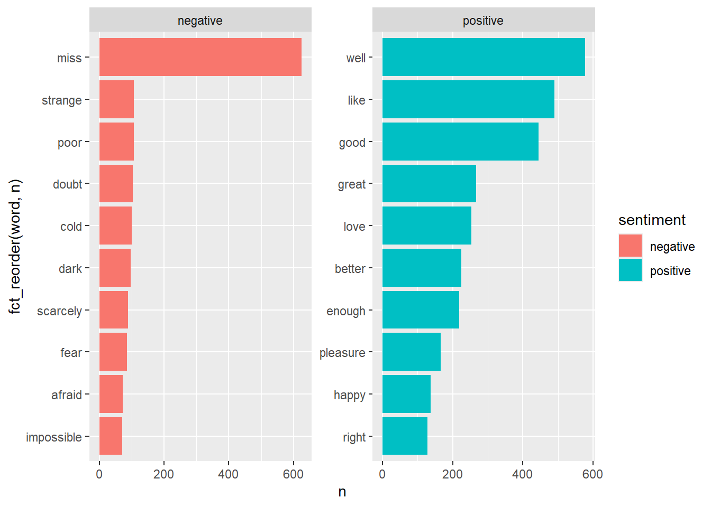
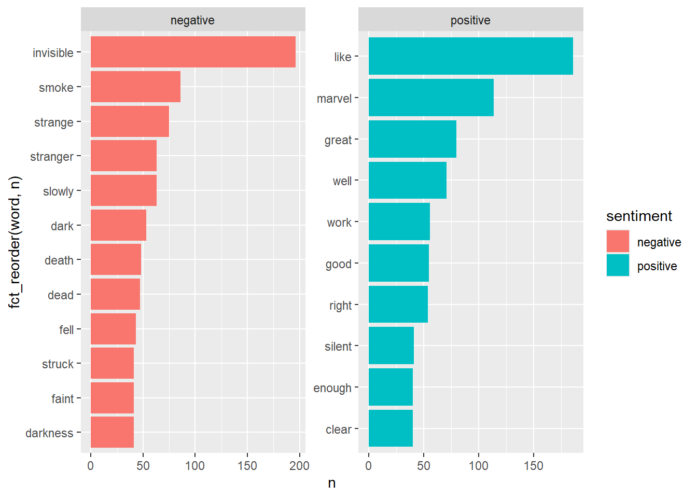
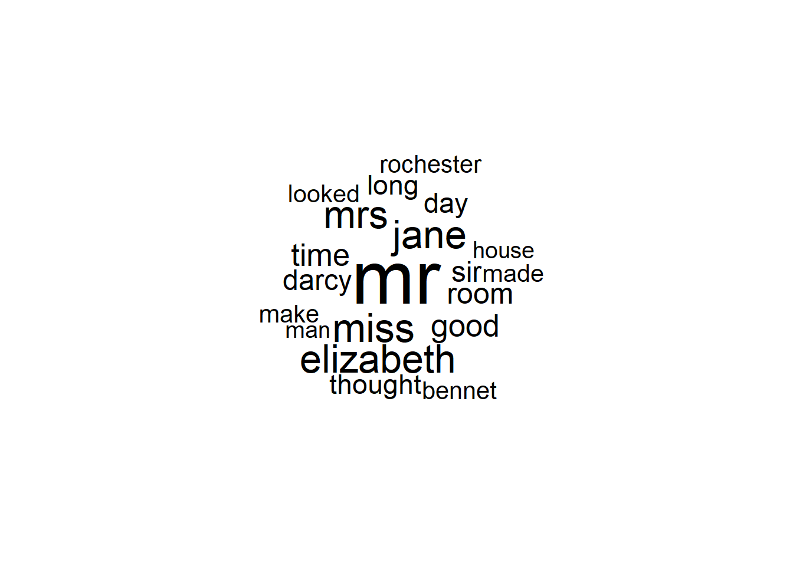
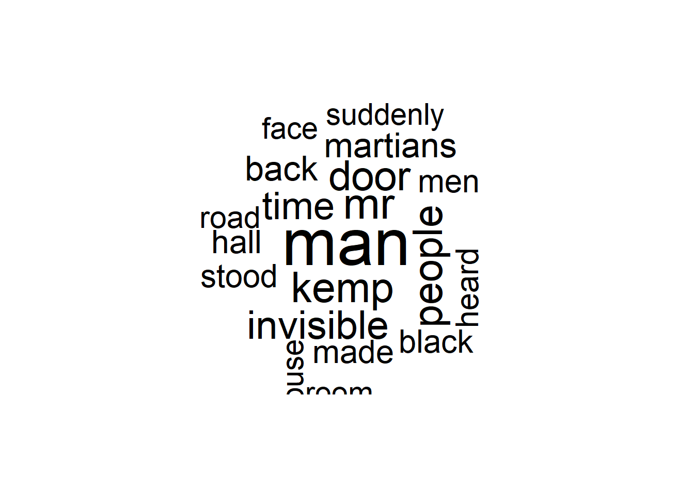
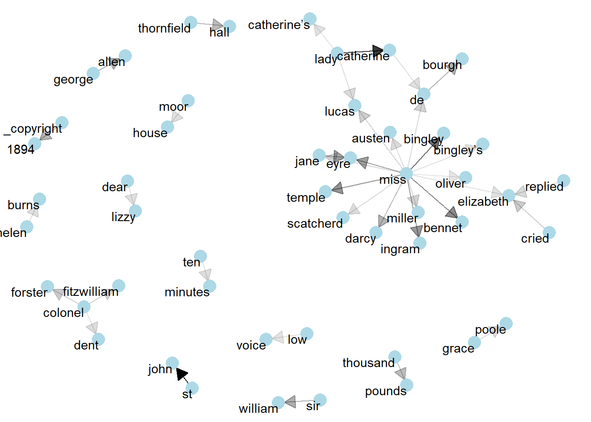

romance <- gutenberg_download(
c(1342, 1260),
mirror = "http://mirror.csclub.uwaterloo.ca/gutenberg/")
sci_fi <- gutenberg_download(
c(36, 5230),
mirror = "http://mirror.csclub.uwaterloo.ca/gutenberg/")Sentiment analysis
Purpose
The goal of this project is to see sentiment analysis of the two different genres of books: romance and sci fi. We will use various methods of observing differences, but mostly through regular expressions and bing sentiment analysis. We hope to find some sort of syntactical differences, and to try and see what separates the two genres.
Libraries
Let’s load in the libraries:
Data
Next, we will download two books for each genre. Note that this is way too small of a sample size to conclude anything important, but for this small analysis it does it’s job.
The two books imported for romance are:
Pride and Prejudice by Jane Austen (ID 1342)
Jane Eyre by Charlotte Brontë (ID 1260)
The two books imported for sci-fi are:
The Time Machine by H.G. Wells (ID 36)
A Princess of Mars by Edgar Rice Burroughs (ID 5230)
Lov
First let’s look at words such as love, loving, or lover. We can do this by creating the regular expression “^lov”. We aim to see these in the romance novels, and not so much the sci fi.
str_view(romance$text, "^lov")[11019] │ <lov>e you if you would have let me; and I long earnestly to be
[11552] │ <lov>ed.
[13222] │ <lov>e and blissful union.”
[14502] │ <lov>ely: a fervent, a solemn passion is conceived in my heart; it leans
[14529] │ <lov>e and idol. One drear word comprised my intolerable duty—“Depart!”
[14662] │ <lov>e, my wild woe, my frantic prayer, are all nothing to you?”
[14753] │ <lov>e rejected: he would suffer; perhaps grow desperate. I thought of
[14886] │ <lov>ed me, outcast as I was; and I, who from man could anticipate only
[16959] │ <lov>e you, and I know you prefer me. It is not despair of success that
[17011] │ <lov>e—what a miracle I was! I drew better than her master in the first
[17921] │ <lov>e; and I will not be regarded in the light of a mere money
[18849] │ <lov>e would follow upon marriage to render the union right even in your
[19382] │ <lov>ed, well-remembered voice—that of Edward Fairfax Rochester; and it
[20169] │ <lov>ing you too well for all this; and making too much of you.”
[20581] │ <lov>e him. He loves (as he _can_ love, and that is not as you love) a
[21381] │ <lov>e, Elizabeth has given as just an exposition of the causes of that
[26791] │ <lov>e with only a few days before.”
[27194] │ <lov>ely as ever. On the stairs were a troop of little boys and girls,
[28215] │ <lov>e, and the object of that love her friend Eliza, she set herself
[29777] │ <lov>e before, her regard had all the warmth of first attachment, and from
... and 3 morestr_view(sci_fi$text, "^lov")[1103] │ <lov>e-making, students sat over their books.Now, the “^lov” is just at the start of the different lines in the dataset, and not the words, but overall we can see the staggering difference as presented.
Sci-Fi Terms
Next, we will look and see the different sci-fi terms in the text. For this, I simply googled different sci-fi terms and decided on the words: clone, robot, alien, and planet. Therefore we use the regular expression “clone|robot|alien|planet” to see if there are any instances of them.
str_view(romance$text, "clone|robot|alien|planet") [581] │ not love, and to see an uncongenial <alien> permanently intruded on her
[2933] │ and an <alien>. You must be on your guard against her; you must shun her
[2989] │ clearest <planet>; and eyes like Miss Scatcherd’s can only see those
[4719] │ character, or observing and describing s<alien>t points, either in
[5739] │ not at all brilliant? for the <planet> above quells their rays. And what
[6668] │ “Why not?” I asked myself. “What <alien>ates him from the house? Will he
[10090] │ relatives asserting, notwithstanding their <alien>ation, the unity of the
[14123] │ even when I found her nature wholly <alien> to mine, her tastes obnoxious
[14914] │ come, and her <planet>s were risen: a safe, still night: too serene for
[16326] │ strangers, and the third considers himself an <alien> from his native
[16799] │ <planet>s presided over her birth, I wonder?)
[17922] │ speculation. And I do not want a stranger—unsympathising, <alien>,
[18982] │ man, <alien>ated as he now was, had once saved my life, and that we were
[24840] │ conjecture the causes or circumstances which may have <alien>ated them,str_view(sci_fi$text, "clone|robot|alien|planet") [91] │ The <planet> Mars, I scarcely need remind the reader, revolves about the
[109] │ The secular cooling that must someday overtake our <planet> has already
[123] │ warmer <planet>, green with vegetation and grey with water, with a cloudy
[129] │ least as <alien> and lowly as are the monkeys and lemurs to us. The
[151] │ Schiaparelli watched the red <planet>—it is odd, by-the-bye, that for
[161] │ into their <planet>, from which their shots were fired at us. Peculiar
[168] │ incandescent gas upon the <planet>. It had occurred towards midnight of
[173] │ puff of flame suddenly and violently squirted out of the <planet>, “as
[183] │ scrutiny of the red <planet>.
[191] │ circle of deep blue and the little round <planet> swimming in the field.
[196] │ the activity of the clockwork that kept the <planet> in view.
[198] │ As I watched, the <planet> seemed to grow larger and smaller and to
[216] │ <planet>. I saw it. A reddish flash at the edge, the slightest projection
[236] │ shower upon the <planet>, or that a huge volcanic explosion was in
[238] │ evolution had taken the same direction in the two adjacent <planet>s.
[249] │ spread through the clearness of the <planet>’s atmosphere and obscured
[261] │ jubilant Markham was at securing a new photograph of the <planet> for the
[470] │ from the <planet> Mars, but I judged it improbable that it contained any
[672] │ in which they had come to the earth from their <planet>, a kind of
[1110] │ for countless years—as though no <planet> Mars existed in the sky. Even
... and 16 moreWe now can see that the sci-fi text contains more of these words, and we see the difference in how some of the words are used, such as alien.
Large Words
Here, I just wanted to see what genre used more “elaborate” words, sci-fi or romance. Doing this, I take the first 2,000 words, and see how many of them are over 8 letters long.
romance_words <- romance |>
unnest_tokens(word, text)
romance_words_subset <- romance_words[1:2000,]
sum(str_count(romance_words_subset$word, "^........"))[1] 259sci_fi_words <- sci_fi |>
unnest_tokens(word, text)
sci_fi_words_subset <- sci_fi_words[1:2000,]
sum(str_count(sci_fi_words_subset$word, "^........"))[1] 267The result is pretty much the same, but again we are only taking 2,000 words in 2 different books for each, so there is not enough to conlude anything.
Bing Sentiments
Next, we will look at the different bing sentiments, or the most common negative and positive sentiments used in both books.
bing_sentiments <- get_sentiments(lexicon = "bing")
romance_words |>
inner_join(bing_sentiments) |>
count(sentiment, word, sort = TRUE) |>
group_by(sentiment) |>
slice_max(n, n = 10) |>
ungroup() |>
ggplot(aes(x = fct_reorder(word, n), y = n, fill = sentiment)) +
geom_col() +
coord_flip() +
facet_wrap(~ sentiment, scales = "free")
sci_fi_words |>
inner_join(bing_sentiments) |>
count(sentiment, word, sort = TRUE) |>
group_by(sentiment) |>
slice_max(n, n = 10) |>
ungroup() |>
ggplot(aes(x = fct_reorder(word, n), y = n, fill = sentiment)) +
geom_col() +
coord_flip() +
facet_wrap(~ sentiment, scales = "free")
I believe these results are a great representation of the genres themselves. For romance we see the negative word “miss” used a lot. It would that someone’s heart is yearning, or at the very least, slightly clingy, but there are many characters in the novels such as miss darcy, so we can ignore that entry. Quite amusingly, invisible is the most common word used in the sci-fi, which is very unusual.
Wordcloud
Let’s create a word cloud for the different genres, it is quite evident the different words for each genre.
smart_stopwords <- get_stopwords(source = "smart")
words <- romance_words |>
anti_join(smart_stopwords) |>
count(word) |>
filter(word != "NA") |>
arrange(desc(n))Joining with `by = join_by(word)`wordcloud(
words = words$word,
freq = words$n,
max.words = 20,
random.order = FALSE
)
smart_stopwords <- get_stopwords(source = "smart")
words <- sci_fi_words |>
anti_join(smart_stopwords) |>
count(word) |>
filter(word != "NA") |>
arrange(desc(n))Joining with `by = join_by(word)`wordcloud(
words = words$word,
freq = words$n,
max.words = 20,
random.order = FALSE
)
Again we see the differing genre words, such as martian and miss. This creates a better picture as the vocabulary used in these novels, and we can gather different themes just by connecting these words.
Romance Bigrams
Lastly, just for fun, we can see the different bigrams in the romance novels.
book_twowords <- romance |>
mutate(linenumber = row_number()) |>
ungroup() |>
unnest_tokens(bigram, text, token = "ngrams", n = 2) |>
filter(bigram != "NA")
book_twowords |>
count(bigram, sort = TRUE)# A tibble: 123,126 × 2
bigram n
<chr> <int>
1 of the 1246
2 in the 969
3 to be 740
4 to the 664
5 it was 624
6 i am 620
7 i had 535
8 i was 526
9 it is 501
10 i have 481
# ℹ 123,116 more rowsbigrams_filtered <- book_twowords |>
separate(bigram, c("word1", "word2"), sep = " ") |>
filter(!word1 %in% stop_words$word,
!word2 %in% stop_words$word) |>
count(word1, word2, sort = TRUE) |>
filter(!is.na(word1) & !is.na(word2))
bigram_graph <- bigrams_filtered |>
filter(n > 10) |>
graph_from_data_frame()
a <- grid::arrow(type = "closed", length = unit(.15, "inches"))
ggraph(bigram_graph, layout = "fr") +
geom_edge_link(aes(edge_alpha = n), show.legend = FALSE,
arrow = a, end_cap = circle(.07, 'inches')) +
geom_node_point(color = "lightblue", size = 5) +
geom_node_text(aes(label = name), vjust = 1, hjust = 1) +
theme_void()
It is neat to see the different characters mostly used, as miss seems to align with the differing characters in the novel. We also see this pattern for colonel and sir. From this, we can see that there are many female characters in these novels that have enough prevelance to become some of the top bigrams.
Through this document, we can observe the different uses of romance and sci-fi, as well as their differing nuances that is unique to their respective genre. This method was mostly trying to obtain the main idea of the books, through the use of their vocab. We can then see trends of these words, and possibly try to predict the different story, or at the very least see how they compare to another genre.